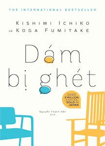

« Back
Dám Bị Ghét
By Koga Fumitake - Kishimi Ichiro

Giới Thiệu..
ĐÊM THỨ NHẤT: Hãy Phủ Nhận Sang Chấn Tâm Lý..
Tại Sao Nói "Con Người Có Thể Thay Đổi"?..
Sang Chấn Tâm Lý Vốn Không Tồn Tại..
Con Người Ưa Ngụy Tạo Cơn Giận..
Cách Sống Không Bị Quá Khứ Chi Phối..
Sokrates Và Adler..
Cậu Không Phải Mãi "Như Thế Này" Mà Được..
Cậu Bất Hạnh Là Bởi Tự Mình Chọn Lấy "Bất Hạnh"..
Con Người Thường Quyết Tâm "Không Thay Đổi"..
Cuộc Đời Cậu Được Quyết Định "Ngay Tại Đây, Vào Lúc Này"..
ĐÊM THỨ HAI: Mọi Phiền Muộn Đều Bắt Nguồn Từ Quan Hệ Giữa Người Với Người..
Mọi Phiền Muộn Đều Bắt Nguồn Từ Quan Hệ Giữa Người Với Người..
Cảm Giác Tự Ti Là Ngộ Nhận Mang Tính Chủ Quan..
Phức Cảm Tự Ti Là Một Sự Bao Biện..
Người Nào Phô Trương, Kẻ Đó Tự Ti..
Đời Không Phải Là Cuộc Cạnh Tranh Với Người Khác..
"Chỉ Cháu Là Để Ý Đến Khuôn Mặt Của Mình Thôi"..
Từ Tranh Giành Quyền Lực Đến Trả Đũa..
Thừa Nhận Sai Lầm Không Phải Là "Thua Cuộc"..
Làm Thế Nào Vượt Qua "Các Nhiệm Vụ Cuộc Đời" Mình Phải Đối Diện..
Sợi Tơ Hồng Và Dây Xích Chắc..
Không Được Lảng Tránh "Lời Nói Dối Cuộc Đời"..
ĐÊM THỨ BA: Bỏ Qua Nhiệm Vụ Của Người Khác..
Không Được Sống Để Đáp Ứng Mong Đợi Của Người Khác..
"Phân Chia Nhiệm Vụ" Là Gì?..
Hãy Bỏ Qua Nhiệm Vụ Của Người Khác..
Cách Loại Bỏ Hoàn Toàn Những Phiền Muộn Trong Quan Hệ Giữa Người Với Người..
Hãy Chém Đứt Nút Thắt Gordias..
Nhu Cầu Được Thừa Nhận Dẫn Tới Mất Tự Do..
Tự Do Thực Sự Là Gì..
Lá Bài "Mối Quan Hệ Với Người Khác" Luôn Do Bản Thân Mình Nắm Giữ..
ĐÊM THỨ TƯ: Trung Tâm Thế Giới Nằm Ở Đâu..
Mục Đích Của Mối Quan Hệ Giữa Người Với Người Là "Cảm Thức Cộng Đồng"..
Tại Sao Chỉ Quan Tâm Đến Mình?..
Cậu Không Phải Trung Tâm Của Thế Giới..
Hãy Nghe Tiếng Nói Của Cộng Đồng Lớn Hơn..
Không Được Mắng Mỏ Cũng Không Được Khen Ngợi..
Cách Tiếp Cận "Khích Lệ Lòng Can Đảm"..
Làm Thế Nào Thấy Mình Có Giá Trị..
Chỉ Có Mặt Ở Đây Là Đã Có Giá Trị..
Con Người Không Thể Tùy Cơ Ứng Biến Thay Đổi "Mình"..
ĐÊM THỨ NĂM: Sống Hết Mình "Ngay Tại Đây, Vào Lúc Này"..
Không Phải Khẳng Định Bản Thân Mà Là Chấp Nhận Bản Thân..
Tín Dụng Và Tin Tưởng Khác Nhau Thế Nào?..
Bản Chất Của Công Việc Là Cống Hiến Cho Người Khác..
Lớp Trẻ Đi Trước Lớp Già..
Nghiện Công Việc Là Lời Nói Dối Cuộc Đời..
Ai Cũng Có Thể Hạnh Phúc Ngay Từ Giây Phút Này..
Hai Con Đường Mà Những Người Muốn "Trở Nên Đặc Biệt" Lựa Chọn..
Dám Bình Thường..
Cuộc Đời Là Những Khoảnh Khắc Tiếp Nối..
Sống Như Khiêu Vũ..
Hãy Rọi Đèn Chiếu Vào Cái "Ngay Tại Đây, Vào Lúc Này"..
Lời Nói Dối Cuộc Đời Lớn Nhất..
Hãy Mang Lại "Ý Nghĩa" Cho Cuộc Đời Vô Nghĩa..